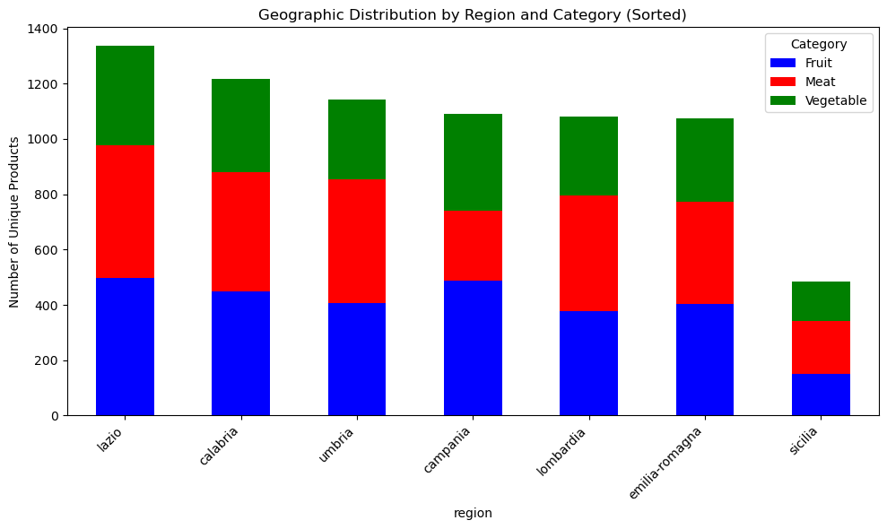
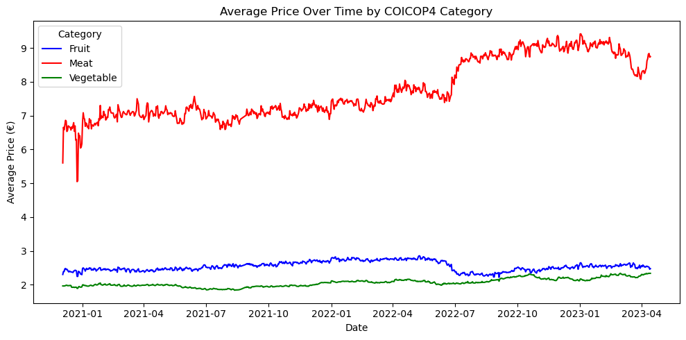
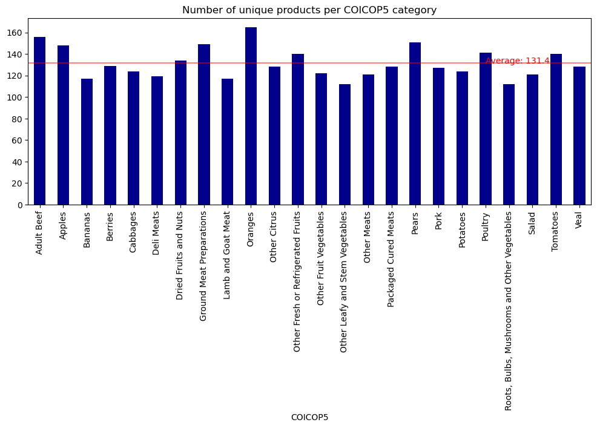
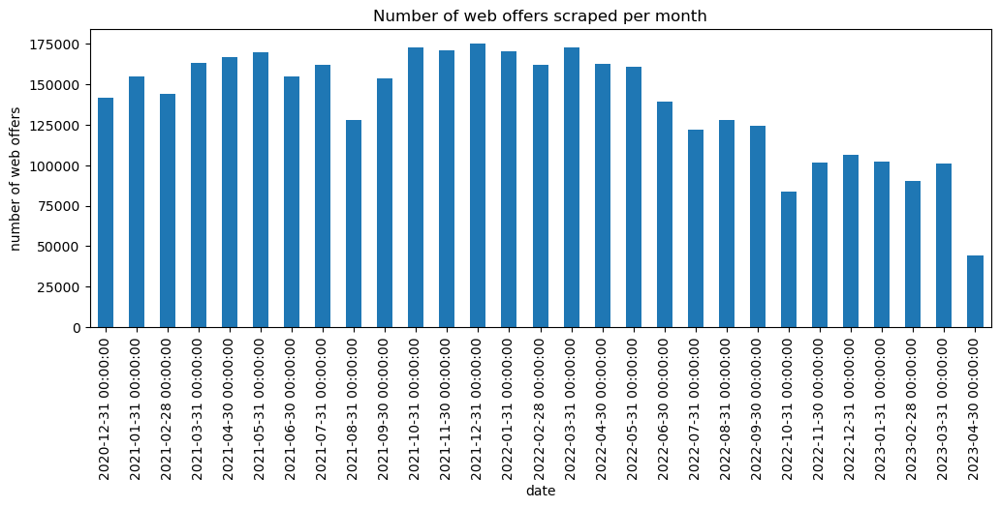

| date | price | product_id | store_id | region | product | COICOP5 | COICOP4 | |
|---|---|---|---|---|---|---|---|---|
| 0 | 2020-12-03 | 1.99 | 2 | 2 | calabria | arance navelina italia calibro 1.5 kg | Oranges | Fruit |
| 1 | 2020-12-03 | 2.48 | 2 | 3 | lazio | arance navelina italia calibro 1.5 kg | Oranges | Fruit |
| 2 | 2020-12-03 | 2.49 | 2 | 4 | calabria | arance navelina italia calibro 1.5 kg | Oranges | Fruit |
| 3 | 2020-12-03 | 1.99 | 2 | 5 | calabria | arance navelina italia calibro 1.5 kg | Oranges | Fruit |
| 4 | 2020-12-03 | 2.49 | 2 | 8 | lazio | arance navelina italia calibro 1.5 kg | Oranges | Fruit |
Explore Italian web scraped grocery dataset
dataset
Daniele Sasso and a few others made their dataset availible on Zenodo - https://doi.org/10.5281/zenodo.14927602 - daily webscraping data from different shops of an Italian supermarket chain.
Manually manually downloaded the dataset to /data/bronze/ for a quick exploration
General overview of the dataset
BN
<class 'pandas.core.frame.DataFrame'>
RangeIndex: 4033211 entries, 0 to 4033210
Data columns (total 8 columns):
# Column Dtype
--- ------ -----
0 date object
1 price float64
2 product_id int64
3 store_id int64
4 region object
5 product object
6 COICOP5 object
7 COICOP4 object
dtypes: float64(1), int64(2), object(5)
memory usage: 246.2+ MBGeographic distribution of unique products by region


Basic analysis: average price trend over time (by COICOP4)

Overall statistics about the dataset
Lets look at some key statistics about the web scrape dataset
| statistic | |
|---|---|
| Number of unique products | 2361.0 |
| Number of unique stores | 20.0 |
| Number of unique regions | 7.0 |
| Number of COICOP5 categories | 24.0 |
| Number of unique scrapes | 841.0 |
| Number of average unique products per store per date | 236.0 |
| number of days in sample | 863.0 |
There seem to be a few days when no scraping happened - i.e. 21 days that were missed. Lets find those days
DatetimeIndex(['2021-02-13', '2021-02-14', '2021-03-23', '2021-03-28',
'2021-06-24', '2021-08-22', '2021-08-23', '2021-08-24',
'2021-08-25', '2021-08-26', '2021-08-27', '2021-09-30',
'2021-12-02', '2022-01-23', '2022-03-16', '2022-06-21',
'2022-10-01', '2022-10-07', '2022-10-10', '2022-10-22',
'2022-10-23', '2022-11-04'],
dtype='datetime64[ns]', freq=None)Now we can consider some web scraping statistics, such as the number of unique products per category and the number of web offers per category

An example of the dataset (as a pivot of date and region/store) is shown with each cell showing the count of products per store
| COICOP4 | ... | product_id | |||||||||||||||||||
|---|---|---|---|---|---|---|---|---|---|---|---|---|---|---|---|---|---|---|---|---|---|
| region | calabria | campania | emilia-romagna | lazio | ... | lazio | lombardia | sicilia | umbria | ||||||||||||
| store_id | 2 | 4 | 5 | 11 | 12 | 18 | 20 | 7 | 15 | 3 | ... | 8 | 19 | 21 | 6 | 9 | 10 | 14 | 16 | 13 | 17 |
| date | |||||||||||||||||||||
| 2020-12-03 | 244.0 | 170.0 | 152.0 | 123.0 | 210.0 | 108.0 | 309.0 | 275.0 | 378.0 | 207.0 | ... | 237.0 | 128.0 | 184.0 | 366.0 | 251.0 | 238.0 | 74.0 | 305.0 | 196.0 | 255.0 |
| 2020-12-04 | 247.0 | 174.0 | 148.0 | 123.0 | 207.0 | 108.0 | 308.0 | 348.0 | 488.0 | 207.0 | ... | 235.0 | 130.0 | 181.0 | 450.0 | 315.0 | 331.0 | 112.0 | 372.0 | 195.0 | 253.0 |
| 2020-12-05 | 243.0 | 180.0 | 147.0 | 122.0 | 207.0 | 108.0 | 299.0 | 340.0 | 495.0 | 207.0 | ... | 233.0 | 130.0 | 179.0 | 448.0 | 309.0 | 323.0 | 113.0 | 370.0 | 196.0 | 251.0 |
| 2020-12-06 | 243.0 | 180.0 | 147.0 | 122.0 | 208.0 | 108.0 | 304.0 | 347.0 | 502.0 | 207.0 | ... | 233.0 | 130.0 | 179.0 | 464.0 | 320.0 | 330.0 | 130.0 | 374.0 | 196.0 | 251.0 |
| 2020-12-07 | 242.0 | 171.0 | 148.0 | 127.0 | 208.0 | 105.0 | 304.0 | 344.0 | 512.0 | 207.0 | ... | 232.0 | 133.0 | 177.0 | 470.0 | 331.0 | 339.0 | 121.0 | 381.0 | 185.0 | 253.0 |
5 rows × 100 columns
The amount of captured web offers a month is also shown

Oranges